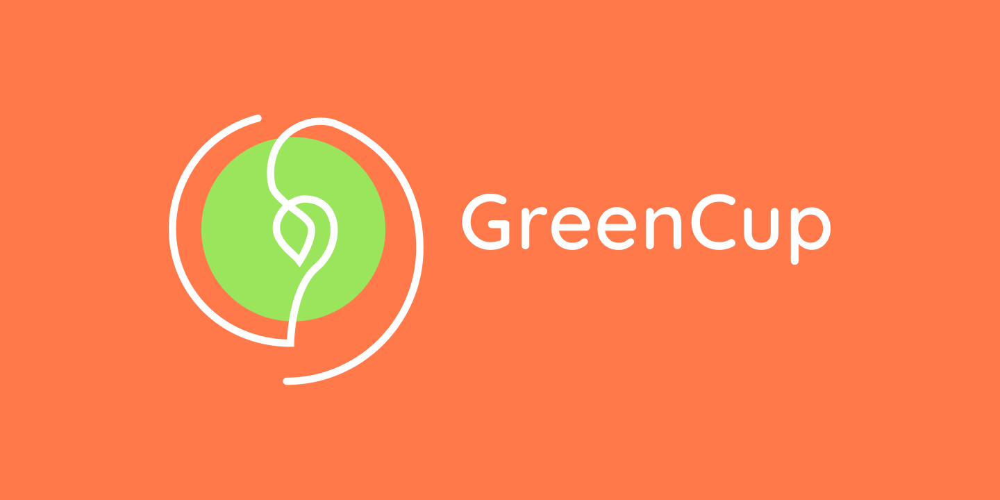
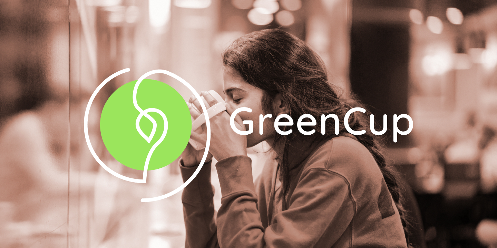
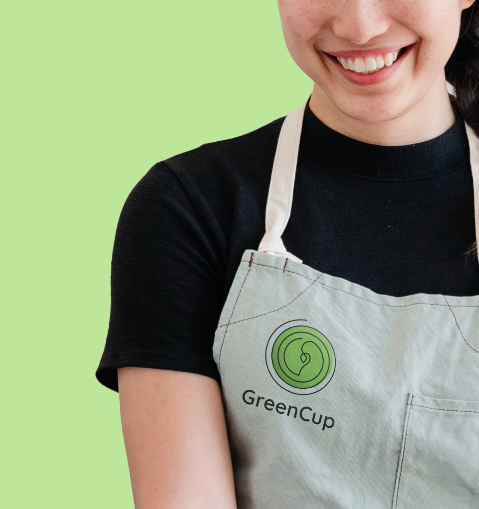
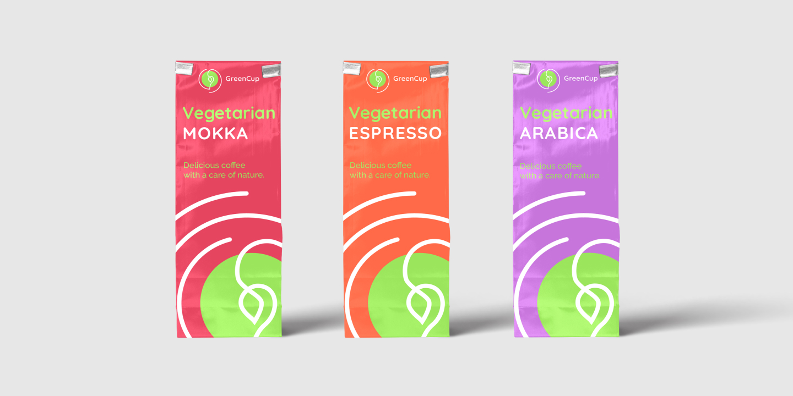
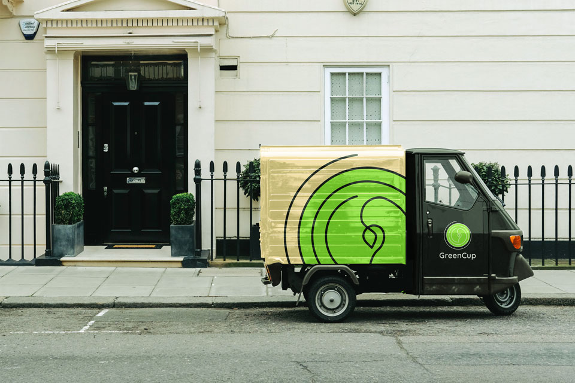
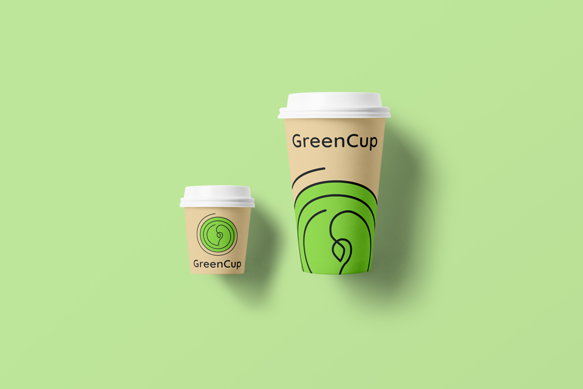
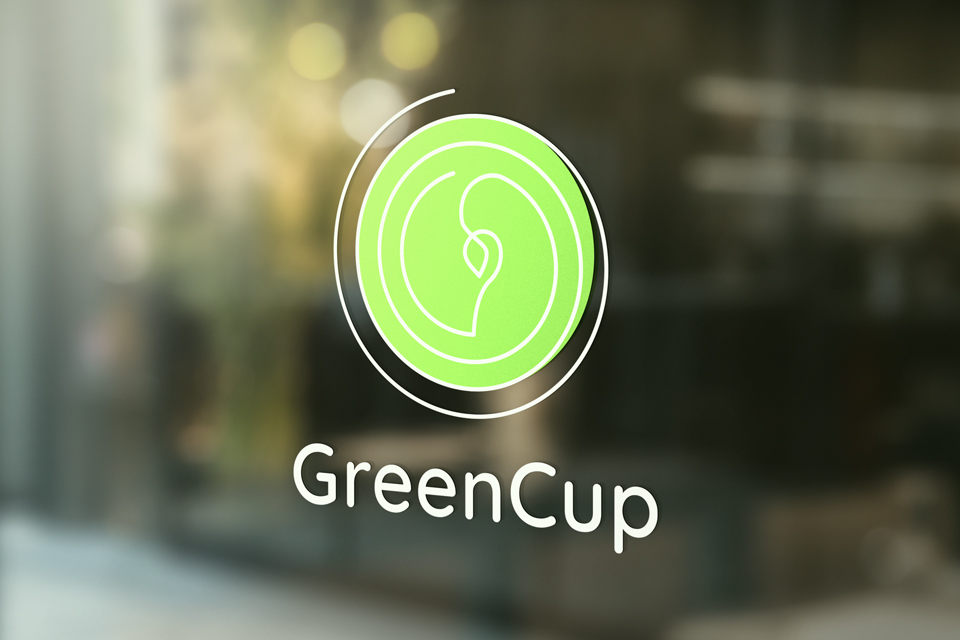

айдентика веганской кофейни GreenCup
веганские заведения зачастую ведут кричащую визуальную кампанию, которая вызывает негативное восприятие конкурентов. мы хотим этого избежать. цель проекта — не отвлекать от продукта громким визуалом. посетитель будет в восторге от вкусного кофе, а логотип станет символом открытости и позитивности гостей кофейни.
рост, сообщество и кофе
точка рождает росток, своим развитием он тесно охватывает людей с общими идеями и принципами.
в статичном логотипе мы видим кофейную пену в чашке, а в центре можно распознать кофейное зерно.


«вкусный кофе с заботой о природе»
    